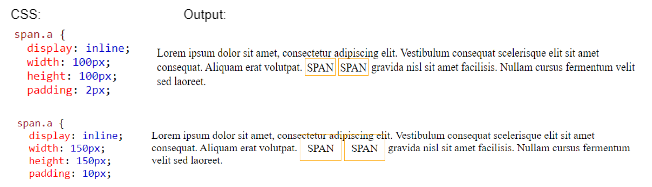
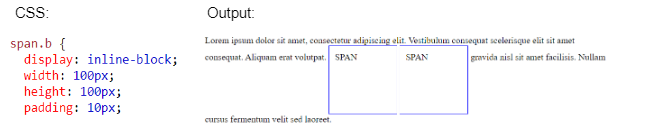

TECHNICAL BLOG
CSS Inline and Inline-block Display
See the images below? Clearly, the first clothesline to the left seems out of space with clothes overlapping on top of each other while the other clothesline has clothes evenly spaced around each other. Probably, you are thinking what’s the matter? In real life, there’s none but in web design, you probably want to make your display seamless and you can start by learning what is the difference between inline and inline-block display.
Let’s look at how it works in actual coding environment:
display: inline
Let’s use the element span which has a default value of inline display:
Look how it ignored the width and the height set, it applied the padding property but the top and bottom padding overlapped with other existing elements.
display: iniline-block
Now, with the in-line block display, the elements follow the height and width set as well as the padding without overlapping with other existing elements.